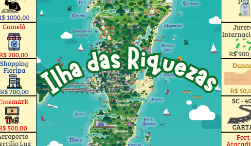

AV1-Atividade de Trigonometria-Arcos e Ângulos

Foi feito um vídeo em dupla dentro do ambiente da escola utilizando os conceitos de Arcos e Ângulos.
Filme Quebrando a banca
Nessa atividade assistimos o filme “Quebrando a banca” e a partir dele escrevemos qual foi a mensagem principal dele e seu envolvimento com a matemática.
Comentário pessoal
Eu gostei de fazer essa atividade porque o filme mostrou como a matemática pode ser utilizada no mundo real. Competências e Habilidades: C5 H31 H32Banco Imobiliário 
Trabalho feito em grupo onde foi criado um mapa de banco imobiliário com o tema de Florianópolis.
Comentário pessoal
Criar um mapa de Floripa foi uma experiência muito interessante já que foi muito envolvido com a criatividade e pudemos ser livres para fazer nossas regras. Competências e Habilidades: C5 H30 H31 H32